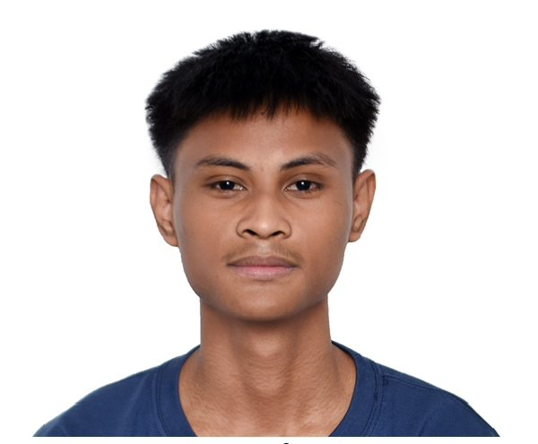

Game on
Basketball and video games are two of my favorite ways to recharge and have fun.
STUDENT · BUILDER · LIFELONG LEARNER
Hi, I’m Errol—a first-year computer science student figuring things out, one idea and one line of code at a time.
Get to know me
Errol Borras
Computer Science student
BASED IN THE PHILIPPINES
01 — A LITTLE ABOUT ME
Hello! I’m a first-year BS Computer Science student at Bicol University. I’ve been curious about technology since I was a kid, and I love the challenge of understanding how things work.
Right now, I’m focused on learning programming, building useful projects, and developing skills that can help me create technology that makes a difference.
02 — OUTSIDE THE CLASSROOM
Basketball and video games are two of my favorite ways to recharge and have fun.
I enjoy reading or watching something interesting and following my curiosity.
There’s always something new to learn, and I like making time to try.
03 — THE ROAD AHEAD
Become a successful software engineer
Travel to at least five different countries
Learn to play the guitar
04 — A WEEK IN MY LIFE
| Subject | Day | Time |
|---|---|---|
| Introduction to Computing | Monday | 9:00 AM – 12:00 NN |
| Computer Programming | Monday to Wednesday | 1:00 PM – 4:00 PM |
| Mathematical Analysis | Tuesday, Thursday and Friday | 9:00 AM – 12:00 NOON |
| Physics for Computing | Tuesday | 10:30 PM – 12:00 PM |
| Movement Competency Training | Wednesday | 7:00 AM – 9:00 AM |
| Understanding the Self | Friday | 1:00 PM – 4:00 PM |
| NSTP (ROTC) | Sunday | 7:00 AM – 5:00 PM |
05 — A FAVORITE CORNER OF THE INTERNET
I enjoy visiting YouTube to watch entertaining videos, learn new things, and explore content about my interests.
Visit YouTube